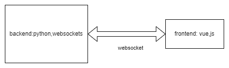
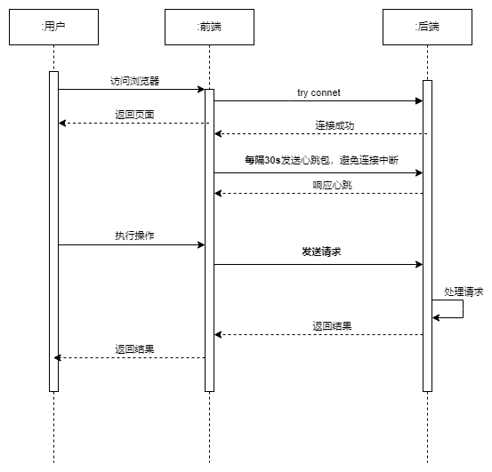
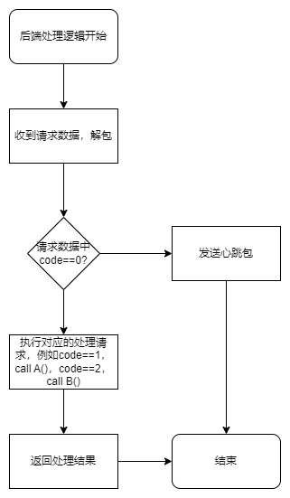
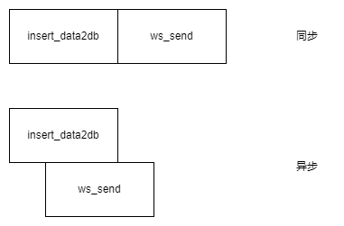
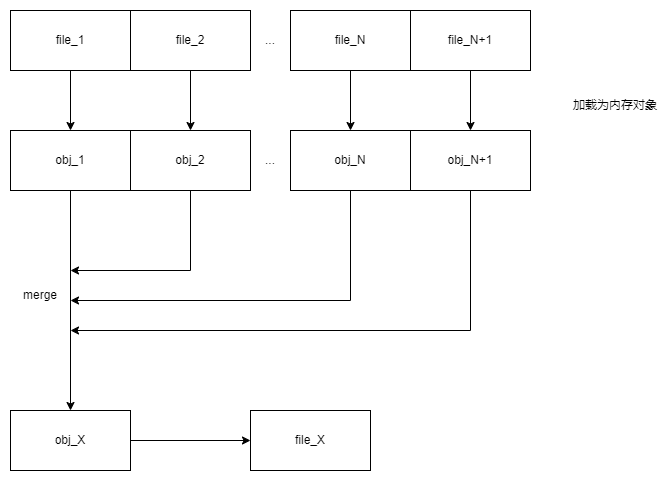
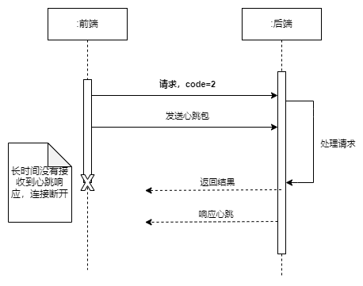
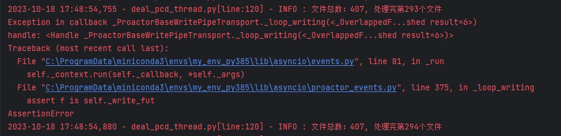

介绍
先介绍下整体系统框架，系统分为前端和后端，二者通过websocket协议进行通信。通过请求数据中的code字段来响应不同的操作。



以上介绍整体的软件逻辑。此外，后端使用Python的asyncio来实现异步编程。
例如，实现将数据插入到数据库并将数据发送到前端：
insert_data2db(data) |
此时程序是顺序执行的。异步版本如下：
await insert_data2db(data) |
此时，程序不会等待insert_data2db完成，直接继续执行ws_send方法。两者区别如下草图：

这种异步的方式在IO-Bound Task中好用。但是对于CPU-Bound Task优化效果不大（甚至会有反效果）
此外，如果后一个操作需要用到前一个操作的结果，这个代码实际是顺序执行的。
主要代码结构（伪）
async def ws_send(websocket, data) |
首先是通过websocket连接将数据发送回前端的通用方法
async def dealPointCloudData(websocket, request_data): |
其次，是分发请求的方法dealPointCloudData，它有两个参数，websocket连接和request_data前端发来的数据。
最后，主程序中会起一个websocket服务器，服务器会将连接发送到dispatch方法，dispatch方法会轮询每一个websocket连接的消息，并交给dealPointCloudData处理。伪代码如下。
server = websockets.serve(dispatch, ip, port) |
现状
目前，当code==2时，需要处理一个计算任务。request_data参数中有一个文件夹路径，该计算任务是读取文件夹下的所有文件内容，将文件内容进行merge，最终生成一个完整的文件。流程如下：

伪代码：
async def func2(websocket, request_data): |
由于func2主要时间花费在一个for循环中， 每次for循环中都有一个耗时的计算任务merge。merge是一个同步方法
所以func2中虽然使用了await异步编程，但整体来看，还是个同步处理程序。
这就导致一个严重的问题，就是当单线程执行func2进行长时间计算的时候，新的心跳包请求-响应会被阻塞掉。如图

如果阻塞的时间过长，前后端就会失去本次连接。
针对该问题，我尝试了几种解决方法。
尝试
1 开启线程执行计算（merge）
func2函数中开启一个新的线程执行计算，并返回数据。
async def func2(websocket, request_data): |
DealPcdsThread线程类的实现如下：
class DealPcdsThread(threading.Thread): |
浏览器控制台日志如图：
这说明在处理计算任务时，主线程没有阻塞，心跳包能够正常返回，和预期一致。
本来问题到这里就解决了，但是在实际测试中又发现了其他问题。
问题1: 前端显示不流畅
如图可以看到进度条卡在2.21%后，过了几秒非常迅速的蹦到了40.79%。但是后台的日志打印是“流畅的”，即没有类似的停顿。
猜测可能是和异步有关，毕竟在await ws_send()后直接返回了，事件循环选择了某个时间点统一发送这些请求。
一开始还以为是计算线程失去了CPU的控制权导致的，后来一想可能性不大，一方面占用时间应该在很短的时间，我应该感觉不到，另一方面，后台日志打印流畅。
问题2: 后台报错
在执行计算的过程，出现报错如下图

该报错我搜索了很久也没有找到解决方案，在加上该报错不会导致任务失败，也不会有其他影响。所以搁置了。
该方案是目前最好的解决方案，我也尝试了很多其他解决方案。这里也一并列出。
2
方案2与方案1相同，同样是开启新线程执行合并，只是新的事件循环有主线程创建，而非在新线程中创建。测试这两种方法表现一致。
async def func2(websocket, request_data): |
3
使用asyncio.run_in_executor将任务放到线程池中运行
async def func2(websocket, request_data): |
测试说明，这种方法会阻塞主线程，导致心跳包无法及时响应。。
4
为了加快计算的速度，想到尝试开启新的进程执行计算。
Process(target=merge, args=(websocket, request_data)).start() |
但是没想到，进程之间传递的Python对象必须可以被序列化（pickle）才可以，而websocket对象不能被序列化，所以这种方法无效。
5
最后一种，同样也是开启一个新的线程，不过target传入的是异步计算方法（虽然是异步的，但是内部确是同步的。。。）
threading.Thread(target=await DealPcdsThread(websocket, request_data).merge()).start() |
这种方法也会阻塞主线程。
小结
在实验过程中，我发现凡是开启新线程并且新线程中使用新的事件循环来处理发送请求都可以让主线程不阻塞。例如方案1、2
但是如果只开新线程，而事件循环依然使用主线程loop的话，不能解决主线程阻塞的问题。例如方案3、5
展望
- 用
concurrent.futures.ThreadPoolExecutor替换threading。concurrent.futures.ThreadPoolExecutor提供了一个高层级接口用来向后台线程推送任务而不会阻塞调用方线程的执行，同时仍然能够在需要时获取任务的结果。 - 先读出所有的文件到内存中，放到一个数组里，再开启多进程对这个数组的点云数据进行reduce。利用多核加快合并速度？
- 其实我觉得最好的方式是，开启一个线程执行计算任务，线程类中有一个指示进度的变量。在主线程中使用一个协程每隔X秒获取一次进度并将其发送给前端。但是这种方式无法做到实时。
- 什么时候Python可以去掉GIL的限制，让这种计算密集型任务能够充分利用多核CPU。。。😢